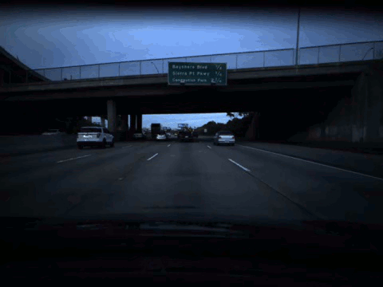

Speed-Detection
Project Overview
Project Workflow
We will begin with a video in mp4 format. The video contains dash cam footage
of a vehicle driving in downtown San Francisco. Our goal is to predict the
speed of the car at each frame ( 20, 400 total ).
Our workflow will be as follows:
- Video -> 20,400 images -> Segmentation
- Segmentation -> optical flow matrix set
- Segmentation -> one hot encoding matrix set
- Combine one hot encoding with optical flow
- Long Short Term Memory ( LSTM ) model
Preparing the dataset
Segmentation
After separating the video into 20,400 images we will process each image through segmentation.
Segmentation is a form of image classification. A typical image classifier has a set number of classes. For example we can make a binary classifier that distinguishes between Adam Sandler or Brad Pitt. Our classifier will label an image as Adam Sandler if it thinks the entire image resembles Adam Sandler. Likewise with Brad Pitt.
But what if the image contains both Brad Pitt and Adam Sandler? How should the image classifier categorize the image? Segmentation is a way to work around this problem. This technique anticipates that both our classes ( Brad Pitt and Adam Sandler ) may be in an image at the same time and therefore approaches classification differently. Instead of classifying an entire image as Brad or Adam, segmentation classifies each pixel as either Adam or Brad.

So taking the information we gleaned from the Brad and Adam example, let's apply it to our current image set. We have driving footage so we need to figure out a way to categorize each object that appears in our images. Fast.Ai created a segmentation model with the following 31 classes below:
classes = [ 'Animal', 'Archway', 'Bicyclist', 'Building', 'Car', 'CartLuggagePram', 'Child', 'Column_Pole', 'Fence', 'LaneMkgsDriv',
'LaneMkgsNonDriv', 'Misc_Text', 'MotorcycleScooter', 'OtherMoving', 'ParkingBlock', 'Pedestrian', 'Road', 'RoadShoulder', 'Sidewalk',
'SignSymbol', 'Sky', 'SUVPickupTruck', 'TrafficCone', 'TrafficLight', 'Train', 'Tree', 'Truck_bus', 'Tunnel', 'VegetagtionMisc', 'Void',
'Wall' ]
Once the image is segmented each of the 31 classes are represented in two ways. If the image is in matrix format the class is shown as a number ( e.g., 0 - 30 ), and in image format we differentiate classes by color ( e.g., sidewalks are purple, buildings are orange ).
Segmenting all our images will allow us to implement other techniques that will help us detect the speed at each frame. From this point we will create two sets of our segmentation image set. One for our optical flow processing and the other for our one hot encoding processing.
Optical Flow
| dash cam footage | optical flow example |
|---|---|
|  |  |
Optical flow is a computer vision tool used for sequential data. In our case we're using it to track any movement from image to image. This allows us to see which of our classes ( pedestrians, street signs ) are moving through our sequence of images.
Let's imagine again our image as a matrix. Our matrix has dimensions of 20 x 30. Optical flow uses small filters ( i.e., a smaller matrix, usually 3 x 3 or 5 x 5 ) that hovers over every part of the 20 x 30 matrix and identifies small dense clusters of similar pixels and then compares it to the next matrix in the sequence.
Visually this ends up looking like the image above on the right, only movement is tracked. Comparing the optical flow gif to the video frame gif on the left we can see that lane markings are being picked up by the optical flow model! That's great news for us because we want to give our LSTM model an object to reference so that it can develop a speed estimate for each frame.
For more information and an implementation of optical flow check this out.
One Hot Encoding
Recall our segmented image example, we have 31 classes total. Our original video is 17 minutes of driving. All 31 classes are not always present in the frame. For example sometimes there are buildings present and other times there are not.
There is another way of communicating that fact. In matrix form an image may be size 1 x W x H where W = width, H = height, and 1 = the number of layers in the matrix. Each pixel is labeled for its corresponding class, but how do we know if a class is not present in the image?
One hot encoding helps display that information. Instead of representing our classes as individual pixels, each class is represented as an individual layer. If the class is not present in the image, the entire layer is filled with 0's. If the class is present, there are 1's wherever the class object is located and 0's everywhere else. In the one hot encoding matrix our new dimensions are now 30 x W x H.
As an example, if we wanted to check if there were any buildings in our image we could look at layer 3 of our one hot encoded matrix.
Jeremy Jordan has created a great illustration of this concept, shown below.

Combining One Hot with Optical Flow
Optical flow preserves the direction of each object. If the optical flow shows that the car is moving towards a building then when we apply matrix multiplication of optical flow and one hot matrices we preserve that movement information. Since our one hot matrix tells us when something is not in an image, when we apply matrix multiplication any optical flow movement at that area will be considered insignificant and will be rendered as 0.
In the next post we'll insert these matrices into our LSTM model.